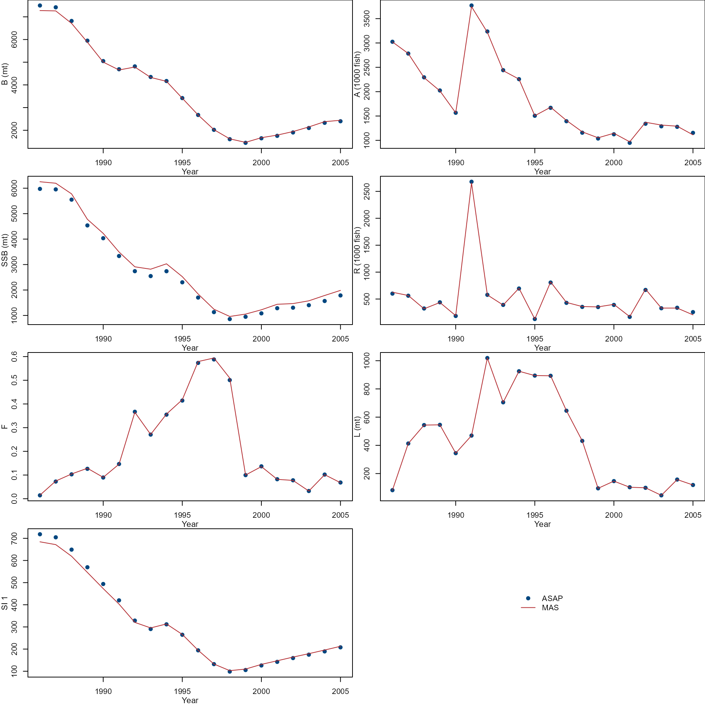
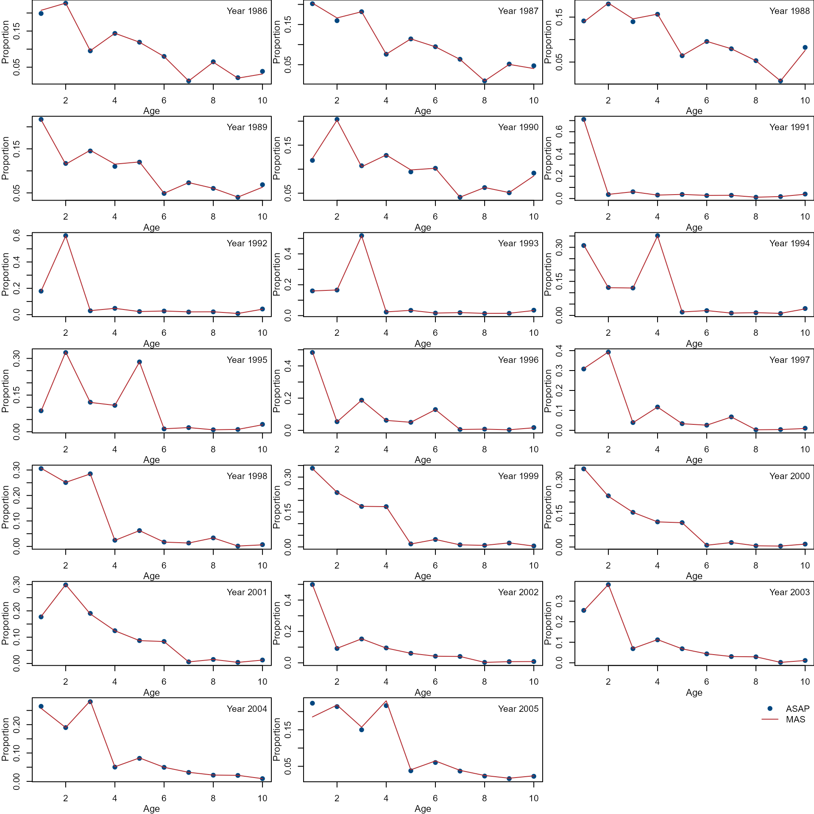
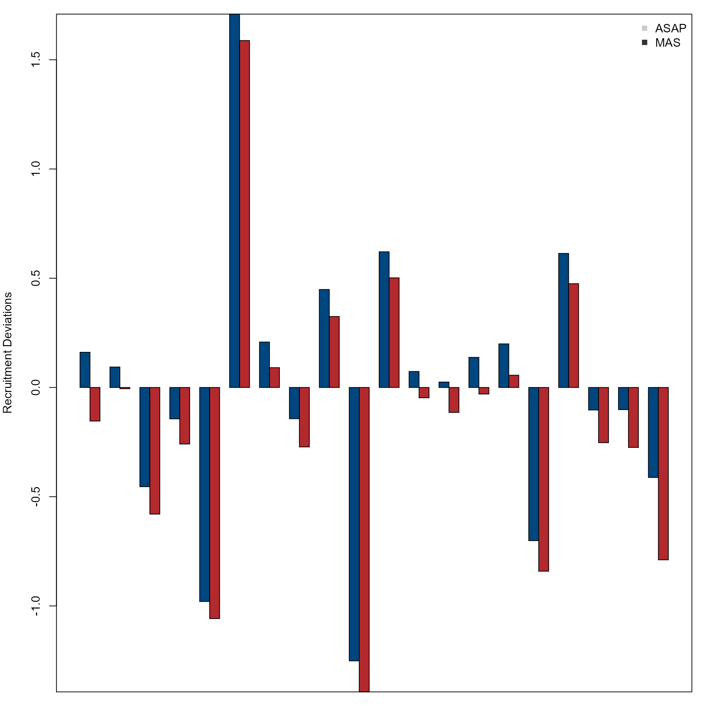

# Working directory
temp_dir <- tempdir()
# Read ASAP input data
asap_input <- fishsad::asap_simple_input$dat
asap_output <- fishsad::asap_simple_output
# Load r4MAS module
r4mas <- Rcpp::Module("rmas", PACKAGE = "r4MAS")
# General settings
nyears <- asap_input$n_years
nseasons <- 1
nages <- asap_input$n_ages
ages <- 1:asap_input$n_ages
area1 <- new(r4mas$Area)
area1$name <- "area1"
# Recruitment settings
recruitment <- new(r4mas$BevertonHoltRecruitment)
recruitment$R0$value <- asap_input$SR_scalar_ini / 1000
recruitment$R0$estimated <-
ifelse(asap_input$phase_SR_scalar < 0, FALSE, TRUE) # TRUE
recruitment$R0$phase <- abs(asap_input$phase_SR_scalar)
recruitment$h$value <- asap_input$steepness_ini
recruitment$h$estimated <-
ifelse(asap_input$phase_steepness < 0, FALSE, TRUE) # TRUE
recruitment$h$phase <- abs(asap_input$phase_steepness)
recruitment$h$min <- 0.2001
recruitment$h$max <- 1.0
recruitment$sigma_r$value <- sqrt(log((asap_input$recruit_cv[1, ])^2 + 1))
recruitment$sigma_r$estimated <- FALSE
recruitment$sigma_r$min <- 0
recruitment$sigma_r$max <- 3
recruitment$sigma_r$phase <- 2
recruitment$estimate_deviations <-
ifelse(asap_input$phase_rec_devs < 0, FALSE, TRUE) # TRUE
recruitment$constrained_deviations <- TRUE
recruitment$deviations_min <- -15.0
recruitment$deviations_max <- 15.0
recruitment$deviation_phase <- abs(asap_input$phase_rec_devs)
recruitment$SetDeviations(rnorm(nyears, mean = 0, sd = sqrt(log((asap_input$recruit_cv[1, ])^2 + 1))))
recruitment$use_bias_correction <- FALSE
# Growth settings
growth <- new(r4mas$VonBertalanffyModified)
fleet_num <- asap_input$n_fleets
catch_waa_pointer <- asap_input$WAA_pointers[fleet_num * 2 + 1]
catch_empirical_weight <-
as.vector(t(asap_input$WAA_mats[[catch_waa_pointer]])) # Total catch
ssb_waa_pointer <- asap_input$WAA_pointers[fleet_num * 2 + 2 + 1]
ssb_empirical_weight <-
as.vector(t(asap_input$WAA_mats[[ssb_waa_pointer]]))
jan1_waa_pointer <- asap_input$WAA_pointers[fleet_num * 2 + 2 + 2]
jan1_empirical_weight <-
as.vector(t(asap_input$WAA_mats[[jan1_waa_pointer]]))
survey_num <- 1 # Need to be updated using the code below when MAS can have multiple surveys with different unit
# survey_num <- asap_input$n_indices
survey_empirical_weight <- vector(mode = "list", length = survey_num)
for (i in 1:survey_num) {
survey_waa_pointer <- asap_input$index_WAA_pointers[i]
survey_waa <- as.vector(t(asap_input$WAA_mats[[survey_waa_pointer]]))
if (asap_input$index_units[i] == 1) {
survey_empirical_weight[[i]] <- survey_waa
} # Survey unit is biomass
if (asap_input$index_units[i] == 2) {
survey_empirical_weight[[i]] <- replicate(nages * nyears, 1.0)
} # Survey unit is number
}
growth$SetUndifferentiatedCatchWeight(catch_empirical_weight)
growth$SetUndifferentiatedWeightAtSeasonStart(jan1_empirical_weight)
growth$SetUndifferentiatedWeightAtSpawning(ssb_empirical_weight)
growth$SetUndifferentiatedSurveyWeight(survey_empirical_weight[[1]])
# Maturity settings
maturity <- new(r4mas$Maturity)
maturity$values <- asap_input$maturity[1, ]
# Natural mortality settings
natural_mortality <- new(r4mas$NaturalMortality)
natural_mortality$SetValues(asap_input$M[1, ])
# Movement settings
movement <- new(r4mas$Movement)
movement$connectivity_females <- c(0.0)
movement$connectivity_males <- c(0.0)
movement$connectivity_recruits <- c(0.0)
# Initial deviations
initial_deviations <- new(r4mas$InitialDeviations)
initial_deviations$values <- rep(0.0, times = nages)
initial_deviations$estimate <-
ifelse(asap_input$phase_N1_devs < 0, FALSE, TRUE) # TRUE
initial_deviations$phase <- abs(asap_input$phase_N1_devs)
# Create population
population <- new(r4mas$Population)
for (y in 1:(nyears))
{
population$AddMovement(movement$id, y)
} # y starts from 0 or 1?
population$AddNaturalMortality(natural_mortality$id, area1$id, "undifferentiated")
population$AddMaturity(maturity$id, area1$id, "undifferentiated")
population$AddRecruitment(recruitment$id, 1, area1$id)
population$SetInitialDeviations(initial_deviations$id, area1$id, "undifferentiated")
population$SetGrowth(growth$id)
population$sex_ratio <- 0.5 # need to be updated with sex_ratio <- 1 after resolving the issue here (https://github.com/nmfs-fish-tools/r4MAS/issues/35) to match the assumption from ASAP.
# Catch index values and observation errors
catch_index <- vector(mode = "list", length = fleet_num)
for (i in 1:fleet_num) {
catch_index[[i]] <- new(r4mas$IndexData)
catch_index[[i]]$values <- asap_input$CAA_mats[[i]][, (nages + 1)]
catch_index[[i]]$error <- asap_input$catch_cv[, i]
}
# Catch composition data
catch_comp <- vector(mode = "list", length = fleet_num)
for (i in 1:fleet_num) {
catch_comp[[i]] <- new(r4mas$AgeCompData)
catch_comp[[i]]$values <- as.vector(t(asap_input$CAA_mats[[i]][, (1:nages)]))
catch_comp[[i]]$sample_size <- asap_input$catch_Neff[, i]
}
# Likelihood component settings
fleet_index_comp_nll <- vector(mode = "list", length = fleet_num)
fleet_age_comp_nll <- vector(mode = "list", length = fleet_num)
for (i in 1:fleet_num) {
fleet_index_comp_nll[[i]] <- new(r4mas$Lognormal)
fleet_index_comp_nll[[i]]$use_bias_correction <- FALSE
fleet_age_comp_nll[[i]] <- new(r4mas$Multinomial)
}
# Fleet selectivity settings
fleet_selectivity <- vector(mode = "list", length = fleet_num)
for (i in 1:fleet_num) {
selectivity_option <- asap_input$sel_block_option[i]
if (selectivity_option == 1) {
fleet_selectivity[[i]] <- new(r4mas$AgeBasedSelectivity)
fleet_selectivity[[i]]$estimated <- TRUE # if it is age based selectivity, can you estimate some values and fix the other values?
fleet_selectivity[[i]]$phase <- 2 # if it is age based selectivity, can you estimate some values and fix the other values?
# fleet_selectivity$estimated <-
# ifelse(asap_input$sel_ini[[i]][(1:nages), 2] < 0, FALSE, TRUE)
# fleet_selectivity$phase <- asap_input$sel_ini[[i]][(1:nages), 2]
fleet_selectivity[[i]]$values <- asap_output$fleet.sel.mats$sel.m.fleet1[1, ]
# fleet_selectivity[[i]]$values <- asap_input$sel_ini[[i]][(1:nages),1]
}
if (selectivity_option == 2) {
fleet_selectivity[[i]] <- new(r4mas$LogisticSelectivity)
fleet_selectivity[[i]]$a50$value <- asap_input$sel_ini[[i]][(nages + 2), 1]
fleet_selectivity[[i]]$a50$estimated <-
ifelse(asap_input$sel_ini[[i]][(nages + 2), 2] < 0, FALSE, TRUE)
fleet_selectivity[[i]]$a50$phase <- asap_input$sel_ini[[i]][(nages + 2), 2]
fleet_selectivity[[i]]$a50$min <- 0.0001
fleet_selectivity[[i]]$a50$max <- nages
fleet_selectivity[[i]]$slope$value <- asap_input$sel_ini[[i]][(nages + 1), 1]
fleet_selectivity[[i]]$slope$estimated <- ifelse(asap_input$sel_ini[[i]][(nages + 1), 2] < 0, FALSE, TRUE)
fleet_selectivity[[i]]$slope$phase <- asap_input$sel_ini[[i]][(nages + 1), 2]
fleet_selectivity[[i]]$slope$min <- 0.0001
fleet_selectivity[[i]]$slope$max <- nages
}
# Add double-logistic case later
}
# Fishing mortality settings
fishing_mortality <- new(r4mas$FishingMortality)
fishing_mortality$estimate <- TRUE
fishing_mortality$phase <- asap_input$phase_F1
fishing_mortality$min <- 0.0
fishing_mortality$max <- asap_input$Fmax
fishing_mortality$SetValues(rep(asap_input$F1_ini, nyears))
# Create the fleet
fleet <- vector(mode = "list", length = fleet_num)
for (i in 1:fleet_num) {
fleet[[i]] <- new(r4mas$Fleet)
fleet[[i]]$AddIndexData(catch_index[[i]]$id, "undifferentiated")
fleet[[i]]$AddAgeCompData(catch_comp[[i]]$id, "undifferentiated")
fleet[[i]]$SetIndexNllComponent(fleet_index_comp_nll[[i]]$id)
fleet[[i]]$SetAgeCompNllComponent(fleet_age_comp_nll[[i]]$id)
fleet[[i]]$AddSelectivity(fleet_selectivity[[i]]$id, 1, area1$id)
fleet[[i]]$AddFishingMortality(fishing_mortality$id, 1, area1$id)
}
# Survey index values and observation errors
survey_index <- vector(mode = "list", length = survey_num)
for (i in 1:survey_num) {
survey_index[[i]] <- new(r4mas$IndexData)
survey_index[[i]]$values <- asap_input$IAA_mats[[i]][, 2]
survey_index[[i]]$error <- asap_input$IAA_mats[[i]][, 3]
}
# Survey composition
survey_comp <- vector(mode = "list", length = survey_num)
for (i in 1:survey_num) {
survey_comp[[i]] <- new(r4mas$AgeCompData)
survey_comp[[i]]$values <- as.vector(t(asap_input$IAA_mats[[i]][, 4:(4 + nages - 1)]))
survey_comp[[i]]$sample_size <- asap_input$IAA_mats[[i]][, (4 + nages)]
survey_comp[[i]]$missing_values <- 0
}
# Likelihood component settings
survey_index_comp_nll <- vector(mode = "list", length = survey_num)
survey_age_comp_nll <- vector(mode = "list", length = survey_num)
for (i in 1:survey_num) {
survey_index_comp_nll[[i]] <- new(r4mas$Lognormal)
survey_index_comp_nll[[i]]$use_bias_correction <- FALSE
survey_age_comp_nll[[i]] <- new(r4mas$Multinomial)
}
# Survey selectivity settings
survey_selectivity <- vector(mode = "list", length = survey_num)
for (i in 1:survey_num) {
selectivity_option <- asap_input$index_sel_option[i]
if (selectivity_option == 1) {
survey_selectivity[[i]] <- new(r4mas$AgeBasedSelectivity)
survey_selectivity[[i]]$estimated <- FALSE # If it is age based selectivity, can MAS estimates some values and fixes the rest of values?
survey_selectivity[[i]]$phase <- 1
# survey_selectivity[[i]]$estimated <- ifelse(asap_input$index_sel_ini[[i]][(1:nages), 2] < 0, FALSE, TRUE)
# survey_selectivity[[i]]$phase <- asap_input$index_sel_ini[[i]][(1:nages), 2]
survey_selectivity[[i]]$values <- asap_input$index_sel_ini[[i]][(1:nages), 1]
}
if (selectivity_option == 2) {
survey_selectivity[[i]] <- new(r4mas$LogisticSelectivity)
survey_selectivity[[i]]$a50$value <- asap_input$index_sel_ini[[i]][(nages + 2), 1]
survey_selectivity[[i]]$a50$estimated <- ifelse(asap_input$index_sel_ini[[i]][(nages + 2), 2] < 0, FALSE, TRUE)
survey_selectivity[[i]]$a50$phase <- asap_input$index_sel_ini[[i]][(nages + 2), 2]
survey_selectivity[[i]]$a50$min <- 0.0001
survey_selectivity[[i]]$a50$max <- nages
survey_selectivity[[i]]$slope$value <- asap_input$index_sel_ini[[i]][(nages + 1), 1]
survey_selectivity[[i]]$slope$estimated <- ifelse(asap_input$index_sel_ini[[i]][(nages + 1), 2] < 0, FALSE, TRUE)
survey_selectivity[[i]]$slope$phase <- asap_input$index_sel_ini[[i]][(nages + 1), 2]
survey_selectivity[[i]]$slope$min <- 0.0001
survey_selectivity[[i]]$slope$max <- nages
}
# Add double-logistic case later
}
# Create the survey
survey <- vector(mode = "list", length = survey_num)
for (i in 1:survey_num) {
survey[[i]] <- new(r4mas$Survey)
survey[[i]]$AddIndexData(survey_index[[i]]$id, "undifferentiated")
survey[[i]]$AddAgeCompData(survey_comp[[i]]$id, "undifferentiated")
survey[[i]]$SetIndexNllComponent(survey_index_comp_nll[[i]]$id)
survey[[i]]$SetAgeCompNllComponent(survey_age_comp_nll[[i]]$id)
survey[[i]]$AddSelectivity(survey_selectivity[[i]]$id, 1, area1$id)
survey[[i]]$q$value <- asap_input$q_ini[i]
survey[[i]]$q$min <- 0
survey[[i]]$q$max <- 10
survey[[i]]$q$estimated <- ifelse(asap_input$phase_q < 0, FALSE, TRUE)
survey[[i]]$q$phase <- abs(asap_input$phase_q)
}
mas_model <- new(r4mas$MASModel)
mas_model$nyears <- nyears
mas_model$nseasons <- nseasons
mas_model$nages <- nages
mas_model$extended_plus_group <- max(ages)
mas_model$ages <- ages
mas_model$catch_season_offset <- 0.0
mas_model$spawning_season_offset <- asap_input$fracyr_spawn
mas_model$survey_season_offset <- (asap_input$index_month[1] - 1) / 12
mas_model$AddPopulation(population$id)
for (i in 1:fleet_num) {
mas_model$AddFleet(fleet[[i]]$id)
}
for (i in 1:survey_num) {
mas_model$AddSurvey(survey[[i]]$id)
}ASAP
# Read ASAP outputs
asap <- list()
asap$biomass <- asap_output$tot.jan1.B
asap$abundance <- apply(asap_output$N.age, 1, sum)
asap$ssb <- asap_output$SSB
asap$recruit <- asap_output$N.age[, 1]
asap$f <- apply(asap_output$fleet.FAA$FAA.directed.fleet1, 1, max)
asap$landing <- asap_output$catch.pred
asap$survey <- asap_output$index.pred$ind01
asap$agecomp <- apply(asap_output$N.age, 1, function(x) x / sum(x))
asap$r0 <- asap_output$SR.parms$SR.R0
asap$h <- asap_output$SR.parms$SR.steepness
asap$q <- asap_output$q.indices[1]
asap$fleet_selectivity <- asap_output$fleet.sel.mats$sel.m.fleet1[1, ]
asap$survey_selectivity <- asap_output$index.sel[1, ]
asap$year <- asap_output$SR.resids$year
asap$recruit_deviation <- asap_output$SR.resids$logR.dev
# asap$initial_deviation <- c(0, asap_std$value[asap_std$name=="log_N_year1_devs"])MAS
parameter <- unlist(mas_output$estimated_parameters$parameters)
parameter_table <- as.data.frame(matrix(parameter, ncol = 3, byrow = TRUE))
colnames(parameter_table) <- c(
"Parameter",
"Value",
"Gradient"
)
parameter_table$Value <- round(as.numeric(parameter_table$Value),
digits = 6
)
parameter_table$Gradient <- round(as.numeric(parameter_table$Gradient),
digits = 6
)
parameter_table## Parameter Value Gradient
## 1 q_1 0.117355 -0.572018
## 2 log_R0_1 6.347268 -56.968322
## 3 h1 0.591389 -6.940876
## 4 recruitment_deviations[0]_1 -0.153712 0.000098
## 5 recruitment_deviations[1]_1 -0.058414 -2.791706
## 6 recruitment_deviations[2]_1 -0.630838 -1.310355
## 7 recruitment_deviations[3]_1 -0.308814 -1.476524
## 8 recruitment_deviations[4]_1 -1.099731 -0.507769
## 9 recruitment_deviations[5]_1 1.546467 -5.845599
## 10 recruitment_deviations[6]_1 0.057267 -1.154005
## 11 recruitment_deviations[7]_1 -0.297792 -0.765692
## 12 recruitment_deviations[8]_1 0.299806 -1.396218
## 13 recruitment_deviations[9]_1 -1.421657 -0.264427
## 14 recruitment_deviations[10]_1 0.479998 -1.910439
## 15 recruitment_deviations[11]_1 -0.053026 -1.087051
## 16 recruitment_deviations[12]_1 -0.096398 -0.873446
## 17 recruitment_deviations[13]_1 0.005133 -0.819978
## 18 recruitment_deviations[14]_1 0.084890 -0.754850
## 19 recruitment_deviations[15]_1 -0.822844 -0.236050
## 20 recruitment_deviations[16]_1 0.482800 -0.518122
## 21 recruitment_deviations[17]_1 -0.246680 -0.106804
## 22 recruitment_deviations[18]_1 -0.273026 -0.025006
## 23 recruitment_deviations[19]_1 -0.793214 0.004016
## 24 logistic_selectivity_a50_2 3.272447 0.011316
## 25 logistic_selectivity_slope_2 0.645553 0.003031
## 26 age_base_selectivity[7]_1 0.945885 -4.076396
## 27 age_base_selectivity[4]_1 0.965579 -4.672227
## 28 age_base_selectivity[1]_1 0.358798 0.938636
## 29 age_base_selectivity[2]_1 0.628148 -2.044165
## 30 age_base_selectivity[0]_1 0.159657 3.637718
## 31 age_base_selectivity[6]_1 1.013486 -3.924242
## 32 age_base_selectivity[9]_1 1.175840 -6.266837
## 33 age_base_selectivity[8]_1 1.006319 -3.498349
## 34 age_base_selectivity[3]_1 0.898133 -3.986916
## 35 age_base_selectivity[5]_1 0.945827 -5.103954
## 36 fishing_mortality[4][0]_1 0.086963 -55.994221
## 37 fishing_mortality[10][0]_1 0.557785 1.032449
## 38 fishing_mortality[8][0]_1 0.343920 -0.517853
## 39 fishing_mortality[12][0]_1 0.491990 0.784600
## 40 fishing_mortality[17][0]_1 0.031451 -38.251182
## 41 fishing_mortality[6][0]_1 0.351282 -4.083588
## 42 fishing_mortality[9][0]_1 0.402384 0.932362
## 43 fishing_mortality[19][0]_1 0.065638 -13.116621
## 44 fishing_mortality[3][0]_1 0.124026 -31.136895
## 45 fishing_mortality[0][0]_1 0.014498 -403.647109
## 46 fishing_mortality[5][0]_1 0.140386 -25.876638
## 47 fishing_mortality[7][0]_1 0.261323 -4.314139
## 48 fishing_mortality[2][0]_1 0.100659 -40.602970
## 49 fishing_mortality[11][0]_1 0.572909 1.237769
## 50 fishing_mortality[15][0]_1 0.079252 -4.520372
## 51 fishing_mortality[1][0]_1 0.072022 -64.959323
## 52 fishing_mortality[16][0]_1 0.074838 -12.065214
## 53 fishing_mortality[18][0]_1 0.098488 -8.922406
## 54 fishing_mortality[14][0]_1 0.131196 -1.408065
## 55 fishing_mortality[13][0]_1 0.096743 -3.302759
## 56 f_initial_deviations[0]_1 0.931552 -1.646242
## 57 f_initial_deviations[1]_1 1.320867 -2.748726
## 58 f_initial_deviations[2]_1 0.761793 -1.439362
## 59 f_initial_deviations[3]_1 1.456974 -3.749831
## 60 f_initial_deviations[4]_1 1.573062 -3.391849
## 61 f_initial_deviations[5]_1 1.481942 -2.269814
## 62 f_initial_deviations[6]_1 -0.131126 -0.462095
## 63 f_initial_deviations[7]_1 1.850840 -2.511578
## 64 f_initial_deviations[8]_1 0.973378 -0.861609
## 65 f_initial_deviations[9]_1 0.382087 -1.365691
## 66 m_initial_deviations[0]_1 0.931552 -1.646242
## 67 m_initial_deviations[1]_1 1.320867 -2.748726
## 68 m_initial_deviations[2]_1 0.761793 -1.439362
## 69 m_initial_deviations[3]_1 1.456974 -3.749831
## 70 m_initial_deviations[4]_1 1.573062 -3.391849
## 71 m_initial_deviations[5]_1 1.481942 -2.269814
## 72 m_initial_deviations[6]_1 -0.131126 -0.462095
## 73 m_initial_deviations[7]_1 1.850840 -2.511578
## 74 m_initial_deviations[8]_1 0.973378 -0.861609
## 75 m_initial_deviations[9]_1 0.382087 -1.365691
popdy <- mas_output$population_dynamics
pop <- popdy$populations[[1]]
flt <- popdy$fleets[[1]]
srvy <- popdy$surveys[[1]]
mas <- list()
mas$biomass <- unlist(pop$undifferentiated$biomass$values)
mas$abundance <- unlist(pop$undifferentiated$abundance$values)
mas$ssb <- unlist(pop$undifferentiated$spawning_stock_biomass$values)
mas$recruit <- unlist(pop$undifferentiated$recruits$values)
mas$f <- unlist(pop$undifferentiated$fishing_mortality$values)
mas$landing <- unlist(flt$undifferentiated$catch_biomass$values)
mas$survey <- unlist(srvy$undifferentiated$survey_biomass$values)
mas$agecomp <- apply(
matrix(unlist(pop$undifferentiated$numbers_at_age$values),
nrow = popdy$nyears,
ncol = popdy$nages,
byrow = T
),
1,
function(x) x / sum(x)
)
mas$r0 <- exp(parameter_table$Value[parameter_table$Parameter == "log_R0_1"])
mas$h <- parameter_table$Value[parameter_table$Parameter == "h1"]
mas$q <- list(parameter_table$Value[parameter_table$Parameter == "q_1"])
# mas$fleet_selectivity # Where to find selectivity outputs?
# mas$survey_selectivity # Where to find selectivity outputs?
mas$recruit_deviation <- parameter_table[grep("recruitment_deviations", parameter_table$Parameter), "Value"] # Is the order correct from starting year to ending year?Compare temporal trends of biomass(B), abundance(A), spawning stock biomass (SSB), recruit (R), fishing mortality (F), Landings (L), and Survey index (SI) from ASAP (dots) and MAS (lines).
years <- as.numeric(rownames(asap_output$N.age))
par(mfrow = c(4, 2), mar = c(3, 3, 0, 0))
col <- nmfspalette::nmfs_palette("regional web")(2)
var <- c(
"biomass", "abundance", "ssb", "recruit", "f",
"landing", "survey"
)
ylab <- c(
"B (mt)", "A (1000 fish)",
"SSB (mt)", "R (1000 fish)",
"F", "L (mt)", "SI 1"
)
for (i in 1:length(var)) {
ylim <- range(asap[[var[i]]], mas[[var[i]]])
plot(years, asap[[var[i]]],
xlab = "", ylab = "",
ylim = ylim, pch = 19,
col = col[1]
)
lines(years, mas[[var[i]]],
col = col[2], lty = 1
)
mtext("Year", side = 1, line = 2, cex = 0.7)
mtext(ylab[i], side = 2, line = 2, cex = 0.7)
}
plot.new()
legend("center",
c("ASAP", "MAS"),
pch = c(19, NA),
lty = c(NA, 1),
col = col,
bty = "n"
)
Compare age composition from the ASAP (dots) and MAS (lines).
par(mfrow = c(7, 3), mar = c(3, 3, 0, 0))
col <- nmfspalette::nmfs_palette("regional web")(2)
var <- c("agecomp")
ylab <- c("Proportion")
for (i in 1:ncol(asap[[var]])) {
ylim <- range(asap[[var]][, i], mas[[var]][, i])
plot(ages, asap[[var]][, i],
xlab = "", ylab = "",
ylim = ylim, pch = 19,
col = col[1]
)
lines(ages, mas[[var]][, i],
col = col[2], lty = 1
)
mtext("Age", side = 1, line = 2, cex = 0.7)
mtext(ylab, side = 2, line = 2, cex = 0.7)
legend("topright",
paste("Year", years[i]),
bty = "n"
)
}
plot.new()
legend("topright",
c("ASAP", "MAS"),
pch = c(19, NA),
lty = c(NA, 1),
col = col,
bty = "n"
)
Compare recruitment deviations over years from the OM and MAS.
par(mfrow = c(1, 1), mar = c(1, 4, 1, 1))
col <- nmfspalette::nmfs_palette("regional web")(2)
barplot(rbind(asap$recruit_deviation, mas$recruit_deviation),
beside = T,
ylab = "Recruitment Deviations",
col = col
)
box()
legend("topright",
c("ASAP", "MAS"),
col = c("gray80", "gray20"),
pch = c(15, 15),
bty = "n"
)
Compare estimated R0, q, and h.
# var <- c("R0", "h", "q")
summary_table <- matrix(c(
asap$r0, mas$r0,
asap$h, mas$h,
asap$q, mas$q[[1]]
),
ncol = 2, byrow = TRUE
)
colnames(summary_table) <- c("ASAP", "MAS")
rownames(summary_table) <- c("R0", "h", "q")
summary_table## ASAP MAS
## R0 471.7017000 570.930793
## h 0.5792984 0.591389
## q 0.1289099 0.117355